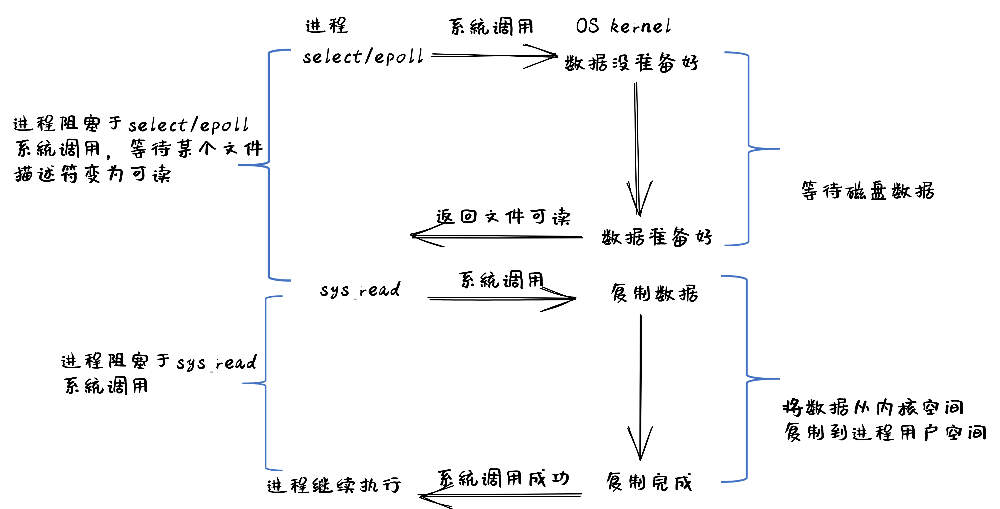
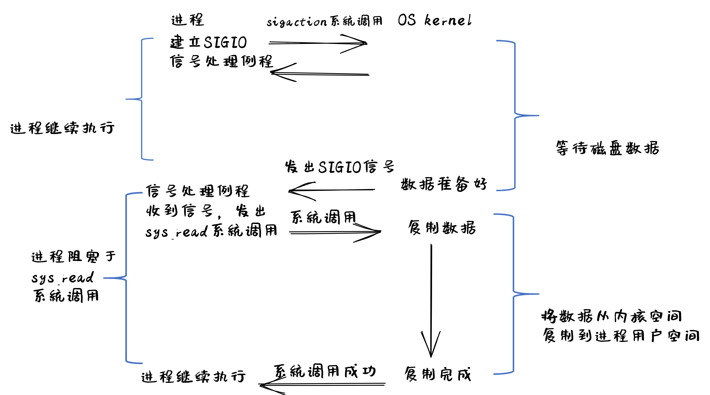
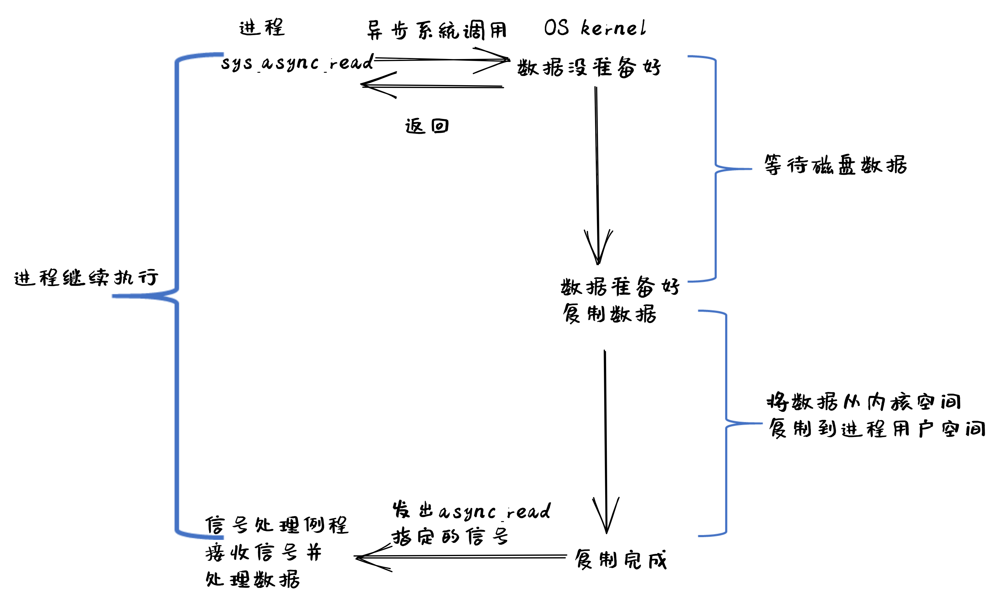

I/O设备#
本节导读#
本节问首先简单介绍了一下I/O设备的发展，可以看到设备越来越复杂，越来越多样化；然后进一步介绍了主要的I/O传输方式，这在后续的驱动程序中都会用上；最后介绍了历史上出现的几种I/O设备抽象，从而可以理解设备驱动程序的编程基础所在。
I/O设备概述#
I/O设备从早期相对比较简单的串口、键盘和磁盘等，逐步发展壮大，已经形成种类繁多，不同领域的各种类型的设备大家庭。而各种设备之间功能不一，性能差异巨大，难以统一地进行管理，这使得对应I/O设备的设备驱动程序成为了操作系统中最繁杂的部分。
站在不同的角度会对I/O设备有不同的理解。在硬件工程师看来，I/O设备就是一堆芯片、电源和其他电路的组合；而软件程序员则主要关注I/O设备为软件提供的接口（interface），即硬件能够接收的命令、能够完成的功能以及能产生的各种响应或错误等。操作系统重点关注的是如何对I/O设备进行管理，而不是其内部的硬件工作原理。然而，对许多I/O设备进行编程还是不可避免地涉及到其内部的硬件细节。如果对I/O设备的发展过程进行深入分析，是可以找到I/O设备的共性特点，从而可以更好地通过操作系统来管理I/O设备。
I/O设备的发展#
计算机的发展历史可体现为计算机硬件中各个部件的复杂度和集成度的变化发展过程。而在I/O设备变化过程，除了外设硬件的多样性越来越广和集成度越来越高以外，与CPU进行交互的能力也越来越强。在计算机发展过程中，I/O设备先后出现了很多，也消亡了不少。
现在I/O设备的种类繁多，我们可以从数据传输的特点来给I/O设备进行分类。早期的UNIX把I/O设备分为两类：块设备（block device）和字符设备（character device）。块设备（比如磁盘）把信息存储在固定大小的块中，每个块有独立的地址。块的大小一般在0.5KB至32KB不等。块设备的I/O传输以一个或多个完整的（连续的）块为单位。另一类I/O设备是字符设备，字符设备（如串口，键盘等）以单个字符为单位发送或接收一个字符流。字符设备不需要寻址，只需访问I/O设备提供的相关接口即可获得/发出字符信息流。
后来随着网络的普及，又出现了一类设备：网络设备。网络面向报文而不是面向字符流或数据块，还具有数据丢失等可靠性问题，因此将网络设备映射为常见的文件比较困难。为此UNIX的早期继承者BSD（Berkeley Software Distribution）提出了socket接口和对应操作，形成了事实上的TCP/IP网络API标准。
再后来随着个人电脑的普及，计算机已经进入寻常百姓家中，计算机的功能和控制范围进一步放大，各种类型的I/O设备层出不穷。GPU、声卡、显卡等外设已经很难归类到上述的三种分类中，所以它们也就形成了各自独立的设备类型。各种设备出现时间有早晚，功能特点各异，这也使得现有的操作系统在设备驱动的设计和实现上面比较繁杂。当前典型的桌面计算机的I/O总体架构如下图所示：

从CPU与外设的交互方式的发展过程来看，CPU可管理的设备数量越来越多，CPU与设备之间的数据传递性能（延迟和吞吐量）也越来越强。总体上看，CPU连接的外设有如下的发展过程：
简单设备#
计算机发展早期，CPU连接的设备不多，设备性能较低，所以CPU可通过I/O接口（如嵌入式系统中的通用输入输出GPIO接口）直接控制I/O设备（如简单的发光二极管等），这在简单的单片机和微处理器控制设备中经常见到。其特点是CPU发出I/O命令或数据，可立刻驱动I/O设备并产生相应的效果。
注解
GPIO
GPIO（General-Purpose Input/Output）是一种输入/输出接口，可以在微控制器或嵌入式系统上使用。它由一组可编程的引脚组成，可以作为输入或输出使用。GPIO引脚可以控制或感测电平，并且可以用于连接各种类型的传感器和输出设备，如LED、按钮、马达和各种类型的传感器。
GPIO引脚可以配置为输入或输出，并且可以通过软件控制其电平。在输入模式下，GPIO引脚可以感测外部电平变化，如按钮按下或传感器发出的信号。在输出模式下，GPIO引脚可以控制外部设备的状态，如LED亮或灭或电机转动。GPIO可用于实现软件定义的功能，这意味着可以在设备驱动程序中来控制GPIO引脚的状态。
基于总线的多设备#
随着计算机技术的发展，CPU连接的设备越来越多，需要在CPU与I/O设备之间增加了一层–I/O控制器（如串口控制器等）。CPU可通过对I/O控制器进行编程来控制各种设备。其特点是CPU给I/O控制器发出I/O命令或读写数据，由I/O控制器来直接控制I/O设备和传达I/O设备的信息给CPU。CPU还需通过访问I/O控制器相关寄存器获取I/O设备的当前状态。其特点是CPU需要轮询检查设备情况，对于低速设备（如串口等）而言，高速CPU和低速设备之间是一种串行执行的过程，导致CPU利用率低。 随着设备的增多，I/O控制器也逐渐通用化（如各种总线接口等），把不同设备连接在一起，并能把设备间共性的部分进行集中管理。
同时，为了简化CPU与各种设备的连接，出现了 总线（bus） 。总线定义了连接在一起的设备需要共同遵守连接方式和I/O时序等，不同总线（如SPI总线、I2C总线、USB总线、PCI总线等）的连接方式和I/O时序是不同的。
注解
总线
计算机中的总线是一种用于在计算机中连接不同设备的电气传输路径。它可以用于在计算机的主板和外部设备之间传输数据。SPI (Serial Peripheral Interface)、I2C (Inter-Integrated Circuit)、USB (Universal Serial Bus) 和 PCI (Peripheral Component Interconnect) 总线都是用于在电脑和外部设备之间传输数据技术，但它们之间有一些显著的区别。在操作系统的眼里，总线也是一种设备，需要设备驱动程序对其进行管理控制。
连接方式：
SPI总线使用四根线来连接设备。它通常使用四条线路，一个用于传输数据（MOSI），一个用于接收数据（MISO），一个用于时钟（SCK），另一个用于选择设备（SS）。
I2C总线使用两根线来连接设备。它通常使用两个线路，一个用于传输数据（SDA），另一个用于时钟（SCL）。
USB总线是一种通用外部总线，具有即插即用和热插拔的功能，处理器通过USB控制器与连接在USB上的设备交互。
PCI总线使用一条板载总线来连接计算机中处理器（CPU）和周边设备。这个总线通常是一条板载在主板上的总线，它使用一组插座和插头来连接设备。
在速度上，I2C总线的传输速度较慢，通常在几KB/s~几百KB/s。SPI总线的传输速度较快，通常在几MB/s。USB总线设备的传输速度更快，通常在几MB/s~几十GB/s。PCI总线的传输速度最快，可达到几GB/s~几十GB/s。
在应用领域方面，SPI总线和I2C总线通常用于嵌入式系统中，连接传感器、显示器和存储设备等外设。USB总线和PCI总线通常用于桌面和服务器计算机中，连接打印机、键盘、鼠标、硬盘、网卡等外设。
支持中断的设备#
随着处理器技术的高速发展，CPU与外设的性能差距在加大，为了不让CPU把时间浪费在等待外设上，即为了解决CPU利用率低的问题，I/O控制器扩展了中断机制（如Intel推出的8259可编程中断控制器）。CPU发出I/O命令后，无需轮询忙等，可以干其他事情。但外设完成I/O操作后，会通过I/O控制器产生外部中断，让CPU来响应这个外部中断。由于CPU无需一直等待外设执行I/O操作，这样就能让CPU和外设并行执行，提高整个系统的执行效率。
注解
中断并非总是比PIO好
尽管中断可以做到计算与I/O的重叠，但这仅在快速CPU和慢速设备之间的数据交换速率差异大的情况下上有意义。否则，如果设备的处理速度也很快（比如高速网卡的速率可以达到1000Gbps），那么额外的中断处理和中断上下文切换、进程上下文切换等的代价反而会超过其提高CPU利用率的收益。如果一个或多个设备在短时间内产生大量的外设中断，可能会使得系统过载，并且让操作系统应付不过来，从而引发活锁 1 。在上述比较特殊的情况下，采用轮询的方式反而更有效，可以在操作系统自身的调度上提供更多的控制，甚至绕过操作系统直接让应用管理和控制外设。
高吞吐量设备#
外设技术的发展也在加速，某些高性能外设（SSD，网卡等）的性能在逐步提高，如果每次中断产生的I/O数据传输量少，那么I/O设备（如硬盘/SSD等）要在短期内传输大量数据就会频繁中断CPU，导致中断处理的总体开销很大，系统效率会降低。通过DMA（Direct Memory Access，直接内存访问）控制器（如Intel推出8237DMA控制器等），可以让外设在CPU没有访问内存的时间段中，以数据块的方式进行外设和内存之间的数据传输，且不需要CPU的干预。这样I/O设备的传输效率就大大提高了。CPU只需在开始传送前发出DMA指令，并在外设结束DMA操作后响应其发出的中断信息即可。
I/O传输方式#
在上述的I/O设备发展过程可以看到， CPU主要有三种方式可以与外设进行数据传输：Programmed I/O (简称PIO)、Interrupt、Direct Memory Access (简称DMA)，如下图所示：

Programmed I/O#
PIO指CPU通过发出I/O指令的方式来进行数据传输。PIO方式可以进一步细分为基于Memory-mapped的PIO（简称MMIO）和Port-mapped的PIO（简称PMIO），MMIO是将I/O设备物理地址映射到内存地址空间，这样CPU就可以通过普通访存指令将数据送到I/O设备在主存上的位置，从而完成数据传输。
对于采用PMIO方式的I/O设备，它们具有自己独立的地址空间，与内存地址空间分离。CPU若要访问I/O设备，则需要使用特殊的I/O指令，如x86处理器中的 IN 、OUT 指令，这样CPU直接使用I/O指令，就可以通过PMIO方式访问设备。
Interrupt based I/O#
如果采用PIO方式让CPU来获取外设的执行结果，那么这样的I/O软件中有一个CPU读外设相关寄存器的循环，直到CPU收到可继续执行I/O操作的外设信息后，CPU才能进一步做其它事情。当外设(如串口)的处理速度远低于CPU的时候，将使CPU处于忙等的低效状态中。
中断机制的出现，极大地缓解了CPU的负担。CPU可通过PIO方式来通知外设，只要I/O设备有了CPU需要的数据，便会发出中断请求信号。CPU发完通知后，就可以继续执行与I/O设备无关的其它事情。中断控制器会检查I/O设备是否准备好进行传输数据，并发出中断请求信号给CPU。当CPU检测到中断信号，CPU会打断当前执行，并处理I/O传输。下图显示了设备中断的I/O处理流程：

Direct Memory Access#
如果外设每传一个字节都要产生一次中断，那系统执行效率还是很低。DMA（Direct Memory Access）是一种用于在计算机系统中进行快速数据传输的技术。它允许设备直接将数据传输到内存中，而不必通过CPU来直接处理。这样使得CPU从I/O任务中解脱出来，从而提高了系统的整体性能。DMA操作通常由DMA控制器来完成。当CPU需要从内存中读取或写入设备数据时，它会提前向DMA控制器发出准备请求，然后DMA控制器会在后续阶段直接将数据传输到目标位置。下图显示了磁盘数据的DMA传输的图示例子：

在后面的小节中，我们会进一步介绍基于I/O控制器的轮询，中断等方式的设备驱动的设计与实现。
注解
DMA技术工作流程
当CPU想与外设交换一块数据时，它会向DMA控制器发出一条命令。命令的基本内容包括：读或写I/O设备的操作标记，I/O设备的地址，DMA内存的起始地址和传输长度。然后CPU继续其它工作。DMA控制器收到命令后，会直接从内存中或向内存传送整块数据，这个传输过程不再需要通过CPU进行操作。传送结束后，DMA控制器会通过I/O控制器给CPU发送一个表示DMA操作结束的中断。CPU在收到中断后，知道这次I/O操作完成，可进行后续相关事务的处理。
在后续讲解的virtio-blk, virtio-gpu等模拟设备中，就是通过DMA来传输数据的。
I/O设备抽象#
I/O接口的交互协议#
对于一个外设而言，它包含了两部分重要组成部分。第一部分是对外向系统其他部分展现的设备I/O接口（hardware I/O interface），这样操作系统才能通过接口来管理控制外设。所有设备都有自己的特定接口以及典型交互的协议。第二部分是对内的内部结构，包含了设备相关物理实现。由于外在接口的多样性，使得操作系统难以统一管理外设。
如果我们不考虑具体的设备，而是站在一个高度抽象的角度来让软件管理设备，那么我们就不用太关注设备的内部结构，而重点考虑设备的接口如何进行简化。其实一个简化的抽象设备接口需要包括三部分：状态、命令、数据。软件可以读取并查看设备的当前状态，从而根据设备当前状态决定下一步的I/O访问请求；而软件是通过一系列的命令来要求设备完成某个具体的I/O访问请求；在完成一个I/O访问请求中，会涉及到将数据传给设备或从设备接收数据。CPU与设备间的I/O接口的交互协议如下所示：
1while STATUS == BUSY {}; // 等待设备执行完毕
2DATA = data; // 把数据传给设备
3COMMAND = command; // 发命令给设备
4while STATUS == BUSY {}; // 等待设备执行完毕
引入中断机制后，这个简化的抽象设备接口需要包括四部分：状态、命令、数据、中断。CPU与设备间的I/O接口的交互协议如下所示：
1DATA = data; // 把数据传给设备
2COMMAND = command; // 发命令给设备
3do_otherwork(); // 做其它事情
4... // I/O设备完成I/O操作，并产生中断
5... // CPU执行被打断以响应中断
6trap_handler(); // 执行中断处理例程中的相关I/O中断处理
7restore_do_otherwork();// 恢复CPU之前被打断的执行
8... // 可继续进行I/O操作
中断机制允许CPU的高速计算与外设的慢速I/O操作可以重叠（overlap），CPU不用花费时间等待外设执行的完成，这样就形成CPU与外设的并行执行，这是提高CPU利用率和系统效率的关键。
站在软件的角度来看，为提高一大块数据传输效率引入的DMA机制并没有改变抽象设备接口的四个部分。仅仅是上面协议伪码中的 data 变成了 data block 。这样传输单个数据产生的中断频度会大大降低，从而进一步提高CPU利用率和系统效率。
这里描述了站在软件角度上的抽象设备接口的交互协议。如果站在操作系统的角度，还需把这种设备抽象稍微再具体一点，从而能够在操作系统中实现对设备的管理。
基于文件的I/O设备抽象#
在二十世纪七十到八十年代，计算机专家为此进行了诸多的探索，希望能给I/O设备提供一个统一的抽象。首先是把本来专门针对存储类I/O设备的文件进行扩展，认为所有的I/O设备都是文件，这就是传统UNIX中常见的设备文件。所有的I/O设备按照文件的方式进行处理。你可以在Linux下执行如下命令，看到各种各样的设备文件：
$ ls /dev
i2c-0 gpiochip0 nvme0 tty0 rtc0 ...
这些设备按照文件的访问接口（即 open/close/read/write ）来进行处理。但由于各种设备的功能繁多，仅仅靠 read/write 这样的方式很难有效地与设备交互。于是UNIX的后续设计者提出了一个非常特别的系统调用 ioctl ，即 input/output control 的含义。它是一个专用于设备输入输出操作的系统调用,该调用传入一个跟设备有关的请求码，系统调用的功能完全取决于设备驱动程序对请求码的解读和处理。比如，CD-ROM驱动程序可以弹出光驱，于是操作系统就可以设定一个ioctl的请求码来对应这种操作。当应用程序发出带有CD-ROM设备文件描述符和 弹出光驱 请求码这两个参数的 ioctl 系统调用请求后，操作系统中的CD-ROM驱动程序会识别出这个请求码，并进行弹出光驱的I/O操作。
ioctl 这名字第一次出现在Unix第七版中，他在很多类unix系统（比如Linux、Mac OSX等）都有提供，不过不同系统的请求码对应的设备有所不同。Microsoft Windows在Win32 API里提供了相似的函数，叫做DeviceIoControl。
表面上看，基于设备文件的设备管理得到了大部分通用操作系统的支持，且这种 ioctl 系统调用很灵活，但它的问题是太灵活了，请求码的定义无规律可循，文件的接口太面向用户应用，并没有挖掘出操作系统在进行I/O设备处理过程中的共性特征。所以文件这个抽象还不足覆盖到操作系统对设备进行管理的整个执行过程中。
基于流的I/O设备抽象#
在二十世纪八十到九十年代的UNIX操作系统的发展过程中，出现了网络等更加复杂的设备，也随之出现了 流 stream 这样的面向I/O设备管理的抽象。Dennis M. Ritchie在1984年写了一个技术报告“A Stream Input-Output System”，详细介绍了基于流的I/O设备的抽象设计。现在看起来，是希望把UNIX中的管道（pipe）机制拓展到内核的设备驱动中。
流是用户进程和设备或伪设备之间的全双工连接。它由几个线性连接的处理模块（module）组成，类似于一个shell程序中的管道（pipe），用于数据双向流动。流中的模块通过向邻居模块传递消息来进行通信。除了一些用于流量控制的常规变量，模块不需要访问其邻居模块的其他数据。此外，一个模块只为每个邻居提供一个入口点，即一个接受消息的例程。

在最接近进程的流的末端是一组例程，它们为操作系统的其余部分提供接口。用户进程的写操作请求和输入/输出控制请求被转换成发送到流的消息，而读请求将从流中获取数据并将其传递给用户进程。流的另一端是设备驱动程序模块。对字符或网络传输而言，从用户进程以流的方式传递数据将被发送到设备；设备检测到的字符、网络包和状态转换被合成为消息，并被发送到流向用户进程的流中。整个过程会经过多个中间模块，这些模块会以各种方式处理或过滤消息。
在具体实现上，当设备打开时，流中的两个末端管理的内核模块自动连接；中间模块是根据用户程序的请求动态附加的。为了能够方便动态地插入不同的流处理模块，这些中间模块的读写接口遵从相同的语义约束并互相兼容。
每个流处理模块由一对队列（queue）组成，每个方向一个队列。队列不仅包括数据队列本身，还包括两个例程和一些状态信息。一个是put例程，它由邻居模块调用以将消息放入数据队列中。另一个是服务（service）例程，被安排在有工作要做的时候执行。状态信息包括指向下游下一个队列的指针、各种标志以及指向队列实例化所需的附加状态信息的指针。

虽然基于流的I/O设备抽象看起来很不错，但并没有在其它操作系统中推广开来。其中的一个原因是UNIX在当时还是一个曲高和寡的高端软件系统，运行在高端的工作站和服务器上，支持的外设有限。而Windows这样的操作系统与Intel的x86形成了wintel联盟，在个人计算机市场被广泛使用，并带动了而多媒体，GUI等相关外设的广泛发展，Windows操作系统并没有采用流的I/O设备抽象，而是针对每类设备定义了一套Device Driver API接口，提交给外设厂商，让外设厂商写好相关的驱动程序，并加入到Windows操作系统中。这种相对实用的做法再加上微软的号召力让各种外设得到了Windows操作系统的支持，但也埋下了标准不统一，容易包含bug的隐患。
基于virtio的I/O设备抽象#
到了二十一世纪，对于操作系统如何有效管理I/O设备的相关探索还在继续，但环境已经有所变化。随着互联网和云计算的兴起，在数据中心的物理服务器上通过虚拟机技术（Virtual Machine Monitor， Hypervisor等），运行多个虚拟机（Virtual Machine），并在虚拟机中运行guest操作系统的模式成为一种主流。但当时存在多种虚拟机技术，如Xen、VMware、KVM等，要支持虚拟化x86、Power等不同的处理器和各种具体的外设，并都要求让以Linux为代表的guest OS能在其上高效的运行。这对于虚拟机和操作系统来说，实在是太繁琐和困难了。
IBM资深工程师 Rusty Russell 在开发Lguest（Linux 内核中的的一个hypervisor（一种高效的虚拟计算机的系统软件）)时，深感写模拟计算机中的高效虚拟I/O设备的困难，且编写I/O设备的驱动程序繁杂且很难形成一种统一的表示。于是他经过仔细琢磨，提出了一组通用I/O设备的抽象 – virtio规范。虚拟机（VMM或Hypervisor）提供virtio设备的实现，virtio设备有着统一的virtio接口，guest操作系统只要能够实现这些通用的接口，就可以管理和控制各种virtio设备。而虚拟机与guest操作系统的virtio设备驱动程序间的通道是基于共享内存的异步访问方式来实现的，效率很高。虚拟机会进一步把相关的virtio设备的I/O操作转换成物理机上的物理外设的I/O操作。这就完成了整个I/O处理过程。
由于virtio设备的设计，使得虚拟机不用模拟真实的外设，从而可以设计一种统一和高效的I/O操作规范来让guest操作系统处理各种I/O操作。这种I/O操作规范其实就形成了基于virtio的I/O设备抽象，并逐渐形成了事实上的虚拟I/O设备的标准。
外部设备为CPU提供存储、网络等多种服务，是计算机系统中除运算功能之外最为重要的功能载体。CPU与外设之间通过某种协议传递命令和执行结果；virtio协议最初是为虚拟机外设而设计的IO协议，但是随着应用范围逐步扩展到物理机外设，virtio协议正朝着更适合物理机使用的方向而演进。

由于virtio具有相对的通用性和代表性，本章将进一步分析virtio规范，以及针对多种virtio设备的设备驱动程序，从而对设备驱动程序和操作系统其他部分的关系有一个更全面的了解。
注解
Rusty Russell工程师在2008年在“ACM SIGOPS Operating Systems Review”期刊上发表了一篇论文“virtio: towards a de-facto standard for virtual I/O devices”，提出了给虚拟环境（Virtual Machine）中的操作系统提供一套统一的设备抽象，这样操作系统针对每类设备只需写一种驱动程序就可以了，这极大降低了系统虚拟机（Virtual Machine Monitor）和Hypervisor，以及运行在它们提供的虚拟环境中的操作系统的开发成本，且可以显著提高I/O的执行效率。目前virtio已经有相应的规范，最新的virtio spec版本是v1.1。
I/O执行模型#
从用户进程的角度看，用户进程是通过I/O相关的系统调用（简称I/O系统调用）来进行I/O操作的。在UNIX环境中，I/O系统调用有多种不同类型的执行模型。根据Richard Stevens的经典书籍“UNIX Network Programming Volume 1: The Sockets Networking ”的6.2节“I/O Models ”的介绍，大致可以分为五种I/O执行模型(I/O Execution Model，简称IO Model, IO模型)：
blocking IO
nonblocking IO
IO multiplexing
signal driven IO
asynchronous IO
当一个用户进程发出一个 read I/O系统调用时，主要经历两个阶段：
等待数据准备好 (Waiting for the data to be ready)
把数据从内核拷贝到用户进程中(Copying the data from the kernel to the process)
上述五种IO模型在这两个阶段有不同的处理方式。需要注意，阻塞与非阻塞关注的是进程的执行状态：
阻塞：进程执行系统调用后会被阻塞
非阻塞：进程执行系统调用后不会被阻塞
同步和异步关注的是消息通信机制：
同步：用户进程与操作系统（设备驱动）之间的操作是经过双方协调的，步调一致的
异步：用户进程与操作系统（设备驱动）之间并不需要协调，都可以随意进行各自的操作
阻塞IO（blocking IO）#
基于阻塞IO模型的文件读系统调用 – read 的执行过程如下图所示：
从上图可以看出执行过程包含如下步骤：
用户进程发出
read系统调用；内核发现所需数据没在I/O缓冲区中，需要向磁盘驱动程序发出I/O操作，并让用户进程处于阻塞状态；
磁盘驱动程序把数据从磁盘传到I/O缓冲区后，通知内核（一般通过中断机制），内核会把数据从I/O缓冲区拷贝到用户进程的buffer中，并唤醒用户进程（即用户进程处于就绪态）；
内核从内核态返回到用户态的进程，此时
read系统调用完成。
所以阻塞IO（blocking IO）的特点就是用户进程在I/O执行的两个阶段（等待数据和拷贝数据两个阶段）都是阻塞的。
当然，如果正好用户进程所需数据位于内存中，那么内核会把数据从I/O缓冲区拷贝到用户进程的buffer中，并从内核态返回到用户态的进程， read 系统调用完成。这个由于I/O缓冲带了的优化结果不会让用户进程处于阻塞状态。
非阻塞IO（non-blocking IO）#
基于非阻塞IO模型的文件读系统调用 – read 的执行过程如下图所示：
从上图可以看出执行过程包含如下步骤：
用户进程发出
read系统调用；内核发现所需数据没在I/O缓冲区中，需要向磁盘驱动程序发出I/O操作，并不会让用户进程处于阻塞状态，而是立刻返回一个error；
用户进程判断结果是一个error时，它就知道数据还没有准备好，于是它可以再次发送read操作（这一步操作可以重复多次）；
磁盘驱动程序把数据从磁盘传到I/O缓冲区后，通知内核（一般通过中断机制），内核在收到通知且再次收到了用户进程的system call后，会马上把数据从I/O缓冲区拷贝到用户进程的buffer中；
内核从内核态返回到用户态的进程，此时
read系统调用完成。
所以，在非阻塞式IO的特点是用户进程不会被内核阻塞，而是需要用户进程不断的主动询问内核所需数据准备好了没有。非阻塞系统调用相比于阻塞系统调用的的差异在于在被调用之后会立即返回。
使用系统调用 fcntl( fd, F_SETFL, O_NONBLOCK ) 可以将对某文件句柄 fd 进行的读写访问设为非阻塞IO模型的读写访问。
多路复用IO（IO multiplexing）#
IO multiplexing对应的I/O系统调用是 select 和 epoll 等，也称这种IO方式为事件驱动IO(event driven IO)。 select 和 epoll 的优势在于，采用单进程方式就可以同时处理多个文件或网络连接的I/O操作。其基本工作机制就是通过 select 或 epoll 系统调用来不断的轮询用户进程关注的所有文件句柄或socket，当某个文件句柄或socket有数据到达了，select 或 epoll 系统调用就会返回到用户进程，用户进程再调用 read 系统调用，让内核将数据从内核的I/O缓冲区拷贝到用户进程的buffer中。
在多路复用IO模型中，对于用户进程关注的每一个文件句柄或socket，一般都设置成为non-blocking，只是用户进程是被 select 或 epoll 系统调用阻塞住了。select/epoll 的优势并不会导致单个文件或socket的I/O访问性能更好，而是在有很多个文件或socket的I/O访问情况下，其总体效率会高。
基于多路复用IO模型的文件读的执行过程如下图所示：
信号驱动IO（signal driven I/O）#
当进程发出一个 read 系统调用时，会向内核注册一个信号处理函数，然后系统调用返回。进程不会被阻塞，而是继续执行。当内核中的IO数据就绪时，会发送一个信号给进程，进程便在信号处理函数中调用IO读取数据。此模型的特点是，采用了回调机制，这样开发和调试应用的难度加大。
基于信号驱动IO模型的文件读的执行过程如下图所示：
异步IO（Asynchronous I/O）#
用户进程发起 async_read 异步系统调用之后，立刻就可以开始去做其它的事。而另一方面，从内核的角度看，当它收到一个 async_read 异步系统调用之后，首先它会立刻返回，所以不会对用户进程产生任何阻塞情况。然后，kernel会等待数据准备完成，然后将数据拷贝到用户内存，当这一切都完成之后，kernel会通知用户进程，告诉它read操作完成了。
基于异步IO模型的文件读的执行过程如下图所示：
注解
Linux异步IO的历史
2003年，Suparna Bhattacharya提出了Async I/O在Linux kernel的设计方案，里面谈到了用Full async state machine模型来避免阻塞，把一系列的阻塞点用状态机来驱动，把用户态的buffer映射到内核来驱动，这个模型被应用到Linux kernel 2.4中。在出现io_uring 之前，虽然还出现了一系列的异步IO的探索（syslet、LCA、FSAIO、AIO-epoll等），但性能一般，实现和使用复杂，应该说Linux没有提供完善的异步IO(网络IO、磁盘IO)机制。io_uring 是由 Jens Axboe提供的异步 I/O 接口，io_uring围绕高效进行设计，采用一对共享内存ringbuffer用于应用和内核间通信，避免内存拷贝和系统调用。io_uring的实现于 2019 年 5 月合并到了 Linux kernel 5.1 中，现在已经在多个项目中被使用。
五种IO执行模型对比#
这里总结一下阻塞IO、非阻塞IO、同步IO、异步IO的特点：
阻塞IO：在用户进程发出IO系统调用后，进程会等待该IO操作完成，而使得进程的其他操作无法执行。
非阻塞IO：在用户进程发出IO系统调用后，如果数据没准备好，该IO操作会立即返回，之后进程可以进行其他操作；如果数据准备好了，用户进程会通过系统调用完成数据拷贝并接着进行数据处理。
同步IO：导致请求进程阻塞/等待，直到I/O操作完成。
异步IO：不会导致请求进程阻塞。
从上述分析可以得知，阻塞和非阻塞的区别在于内核数据还没准备好时，用户进程是否会阻塞（第一阶段是否阻塞）；同步与异步的区别在于当数据从内核copy到用户空间时，用户进程是否会阻塞/参与（第二阶段是否阻塞）。
所以前述的阻塞IO（blocking IO），非阻塞IO（non-blocking IO），多路复用IO（IO multiplexing），信号驱动IO都属于同步IO（synchronous IO）。这四种模型都有一个共同点：在第二阶段阻塞/参与，也就是在真正IO操作 read 的时候需要用户进程参与，因此以上四种模型均称为同步IO模型。
有人可能会说，执行非阻塞IO系统调用的用户进程并没有被阻塞。其实这里定义中所指的 IO操作 是指实际的 IO操作 。比如，非阻塞IO在执行 read 系统调用的时候，如果内核中的IO数据没有准备好，这时候不会block进程。但是当内核中的IO数据准备好且收到用户进程发出的 read 系统调用时（处于第二阶段）， 内核中的 read 系统调用的实现会将数据从kernel拷贝到用户内存中，这个时候进程是可以被阻塞的。
而异步IO则不一样，当用户进程发起IO操作之后，就直接返回做其它事情去了，直到内核发送一个通知，告诉用户进程说IO完成。在这整个过程中，用户进程完全没有被阻塞。
- 1
Jeffrey Mogul and K. K. Ramakrishnan, Eliminating Receive Livelock in an Interrupt-driven Kernel, USENIX ATC 1996, San Diego, CA, January 1996